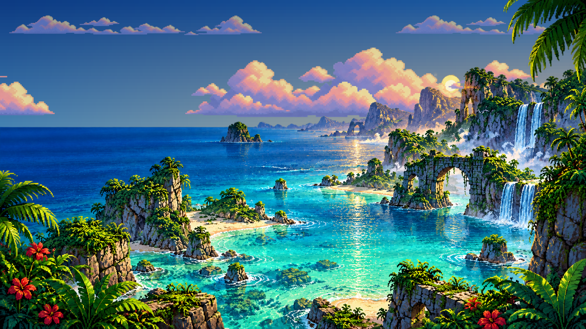
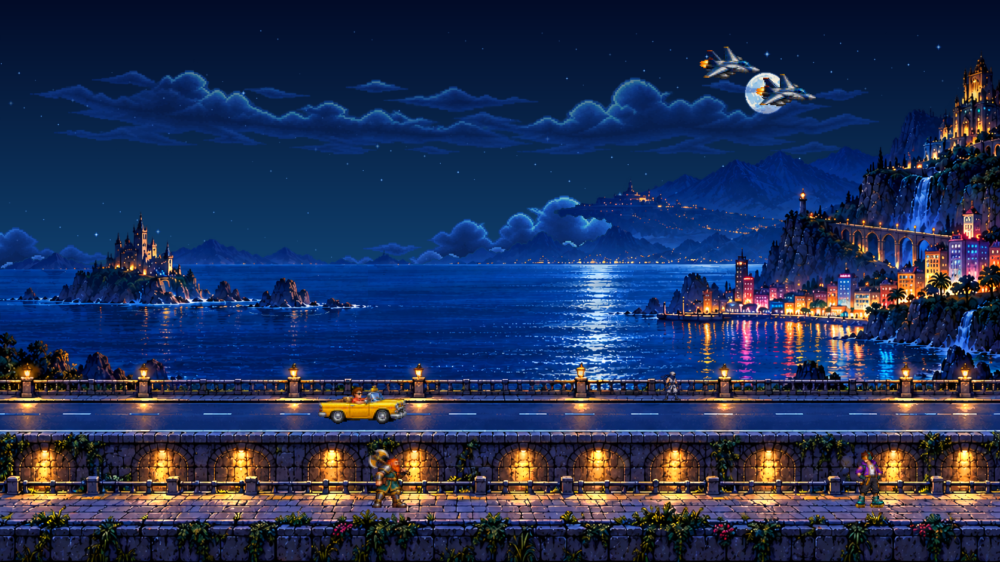

A cartridge-first desktop
Drop supported cartridge images or ZIPs into MegaDrive beside SemaTor. Use the system switcher to open SemaDrive, with games, favourites, recent titles and its own jukebox. Choose Mega Drive or Genesis naming in settings.
NEW IN SEMATOR 1.1.596
Mega Drive and Genesis get a home of their own. Browse your collection, rediscover its soundtracks and play supported games beyond the original screen.
Download SemaTor 1.1.596 ↓Windows · Linux x86-64 · Linux ARM64
Android remains a private test release.

ONE APPLICATION / FAMILIAR CONTROLS
Drop supported cartridge images or ZIPs into MegaDrive beside SemaTor. Use the system switcher to open SemaDrive, with games, favourites, recent titles and its own jukebox. Choose Mega Drive or Genesis naming in settings.
F11 and F12 keep the shared menu layout, now in blue. Save slots, rewind, controls, cartridge restart and game options stay where you expect them. Controller shoulder buttons switch tabs.
Sharp pixels, scanlines, CRT presets and CRT Studio share the presentation foundation. CRT Shader - No Bezel keeps the picture treatment without the cabinet. Frame generation depends on the selected backend and available hardware.
ENHANCEMENTS / VERIFIED EDITIONS
Enhancement profiles extend supported games using their own scenery and gameplay. Options live together in Game options. Support depends on the cartridge edition; the ordinary emulator remains available for other games.
| Game | Widescreen | Extra features | Jukebox |
|---|---|---|---|
| Altered Beast | Extended scenery and gameplay | Separate enhanced music/effects, full-level hard mode, boss-theme choices | 8 tracks |
| Road Rash II | Extended race presentation | Hill and crash-view fixes; per-game controls | 8 tracks |
| Sonic the Hedgehog | Extended level view and gameplay | Tile seam and end-of-act run-off fixes | 19 tracks |
| Sonic the Hedgehog 2 | Extended regular stages | Special-stage halfpipe stays centered at its original aspect ratio | 31 tracks |
| OutRun | Original view | Cartridge soundtrack import | 5 tracks |
Bounded gameplay and automated checks do not establish every cartridge revision or a complete campaign. Golden Axe enhancements are not part of this release.
THE SOUND OF YOUR COLLECTION
Import games scans your Mega Drive folder for supported cartridges. Each soundtrack keeps its own album, with collapsible tracks, favourites, recent listening, series filters and a live visualiser.
Music runs from your own cartridge data through FM and PSG playback. Imports retain earlier albums. Unknown lengths are labelled as unknown; the configurable autoplay timer controls when those tracks advance, while Repeat One keeps playing.
The five supported games above currently provide 71 tracks. This is not a universal music extractor. Games, ROMs and copyrighted soundtracks are not bundled.

Choose coastal scenery, arcade cameos or console-inspired themes. Water movement is masked away from land, clouds drift and lights glow. Hide the SemaDrive logo independently of the theme.
Licensed ambience adds a sea breeze and occasional effects. Jukebox playback takes priority, and switching machines stops the previous machine’s music.
Region-aware cover preferences, handwritten cartridge labels and a metallic-blue Enhanced filter help large collections stay readable. Personal games and saves remain yours.
Bring your own cartridge images. No console BIOS or game media is included.